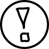
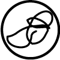
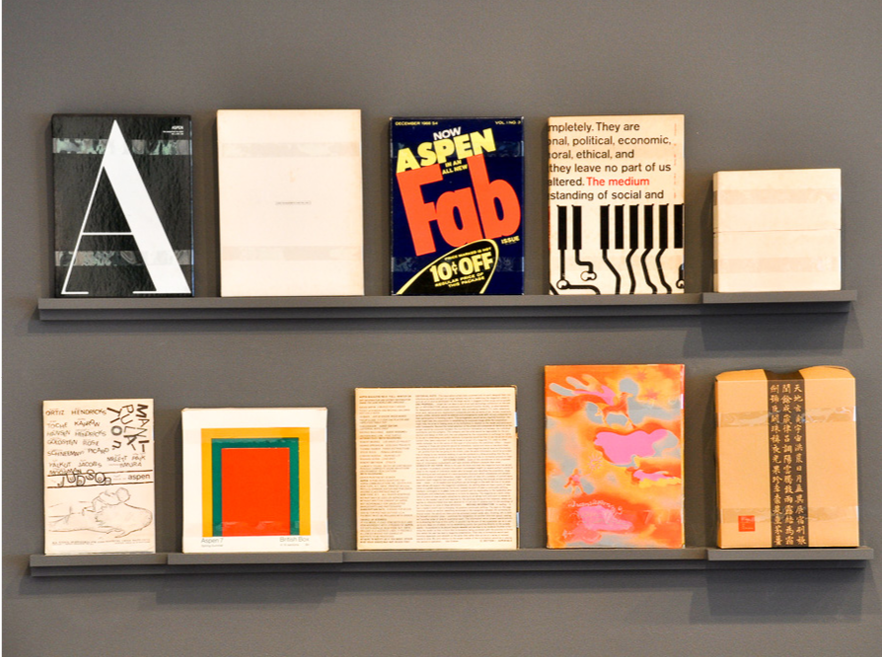

Initially Scroll: Bound 2 set out to satirize a list of grievances we had with a number of big name art publications. We were cynical about how these major periodicals repeatedly serve as echo chambers for ideas, saturate their pages with ads, solicit contributors with a homogenous set of qualifications, and target niche audiences. However, further research ultimately made us realize that these “big name art publications” were far from representative of the current state of art writing.
Bound 2 explores various facets of art writing through nuanced examination. This investigation takes the form of interviews, group discussions, free advertisements, compiled resources, as well as our own essays regarding art criticism. We started with an online roundtable between founders and editors of platforms from across the country who we believe take progressive approaches to art writing. From there, we decided to explore printed publications and met with May Kim and Ben Levy, local collectors and supporters of printed matter, as well as Jerry Litofsky, member of the Baltimore-based Society for History and Graphics. Their contributions to Bound 2 reinforce the ongoing significance of printed formats. We opted to end with a compiled glossary that pays homage to a handful of the platforms that have continually inspired us throughout this process.
Writing is not on the periphery of the art world but rather complementary; its contributions to the arts should not be understated. It is a practice with boundless potential and a momentum that will continue to expand. With that said, existing art writing is still not without its share of barriers, such as the inaccessibility of language, economic feasibility, a scarcity of paid writing positions, and a lack of diversity.
Bound 2 does not provide any tangible solutions, but rather explores art writing, criticism, and publishing at the present moment. While we assert that these endeavors are necessary to contemporary art, there is always room for growth, changing ideas, and new voices. We seek to gauge, challenge, celebrate, and make a case for writing about art. We may have started off with a lengthy list of qualms (a few of which remain) but as we look back, it seems inevitable that we were bound to fall in love.
Scroll is an annual publication, published by The Contemporary, and produced entirely by its intern staff. Each issue of Scroll will explore a different cultural topic related to the mission and efforts of The Contemporary and will be available, for free, in print and online.
Jazmin Smith is a recent graduate of the University of Maryland, Baltimore County. She was born on the twelfth anniversary of Star Wars: A New Hope.
Joseph Shaikewitz is an independent curator from St. Louis, MO. He currently studies art history at Johns Hopkins University.
Lily Clark studied graphic design at the Maryland Institue College of Art (MICA). She loves disco and eating papayas with a spoon.
i. In a 2002 round table organized for October's centennial issue, art historian-cum-moderator George Baker concluded that “Never has it been more difficult to practice art criticism.”
1
“Round Table: The Present Conditions of Art Criticism,” October 100(Spring 2002): 201-2.
Baker addressed an esteemed panel of fellow art historians, critics, artists, and a museum curator who together explored the changing conditions of art writing. Here in his introduction, Baker wastes little time in summarizing his perception of the state of art criticism, essentially positing it as a practice that has been forced into the periphery. While other participants in the conversation envisioned various fates for this discipline, ranging from the increasing marginalization of the critical voice (Benjamin Buchloh) to the inseparability of artistic practice and discursive writing (Helen Molesworth), an overarching sense of malaise pervaded the tone used to discuss the tradition of art writing.
What does it mean to declare a practice “in crisis,” as it appears across literature on the subject? Is it the precursor to the sensationalist eulogies that have accompanied the 'death' of painting, cinema, et al? Or is it an accurate prescription, one that gathers practitioners in a unified search for change and a viable solution? In my own understanding of the phrase, “criticism in crisis” reflects a perceived lack of vision within a communal pursuit. However, when we consider who imposes these assertions of unease, a hierarchical disconnect comes to the surface. The discussion of crisis appears within a notably academic milieu, ranging from books including James Elkins' What Happened to Art Criticism? to museum panels with titles like “The Trouble With Art Criticism.” The problem arises when the scholarly elite takes it upon themselves to place a tombstone over an entire discipline, consequently providing a limited picture of what is taking place more broadly. By potentially ignoring the stakes of their claim, certain members of academia have been able to justify traditional criticism's decline while relegating its place in the art world. In reality, art criticism is an increasingly expanding and experimental field.
ii. While criticism, like any practice, has its own set of shortcomings, 2
See Hal Foster, “Post-Critical,” October 139 (Winter 2012) and Orit Gat, “ 'Thanks': On Negative Criticism,”
Review 31, January 31, 2015 for accounts on criticality's historical decline and the ramifications of negativity, respectively.
the declaration of a crisis both exaggerates its actual state and creates a reluctance around novel ideas. While such a hesitance may manifest itself in certain circles of art writing, art criticism at large is not only promising but prolific. Ultimately, the notion of a crisis is a restricting and hollow label. It clouds the true impact of publications and platforms that are actively hosting new modes of writing and analysis. One example of positive change is the online art journal MOMUS. While it describes itself as “a return to art criticism” in its slogan, it skillfully eschews a recycling of literary tropes and familiar methods of evaluation. Instead, this emergent platform assembles a new wave of art critics from across North America who underscore the importance of changing approaches to criticism. In some of the journal's most compelling articles, its writers highlight the subjective nature of the critical voice by incorporating highly narrative and anecdotal accounts.
3
See in particular Andrew Berardini, “How to Write about Contemporary Art,”MOMUS, October 15, 2014; Aaron Bogart, “Identity After the Internet: Three Berlin Exhibitions in Search of Commonality,”MOMUS, December 22, 2014; and even Clint Burnham, “The Many Violences of Adel Abdessemed,” MOMUS, January 30, 2015.
Even in instances of judgment in the traditional sense, progress is still discernible through original stances that are supported through careful investigations of the individual parts of an exhibition. According to founding editor Sky Goodden, MOMUS addresses “both the flaws and strengths of a generation of practitioners in need of renewed reflection,” and does so with “both vulnerability and integrity, depth and accessibility.”
4
Sky Goodden, e-mail message to author, February 4, 2015.
In addition to thoughtful and extensive interviews with artists and art professionals, MOMUS emulates but ultimately extends the practice and relevance of art writing through a necessary reconsideration of how it can function at its best.
Alongside improvements in the written evaluation of art, an important genre of artist-produced, regionally-focused journals has expanded the dissemination of art and culture. Baltimore-based ACRES, for instance, features bold cultural writing alongside unmediated work from artists across the city. The journal diversifies the content that can live within an arts journal and, in the process, has been positively received throughout the artistic community. Danielle Criqui and Jasmine Sarp, ACRES' founders, see undeniable value in the creation of “a space for sharing works that contribute to a greater dialogue surrounding contemporary art within and beyond Baltimore.”
5
Danielle Criqui and Jasmine Sarp, e-mail message to the author, February 5, 2015.
This growing trend of an updated and expanded scope exists not only in localized instances, but on more national levels as well. For example, DIS Magazine, a product of the New York-based collective DIS, has established its own strategies for diversifying the creative role of a critical platform. The magazine embraces experimental endeavors that range from artist-produced stock images to individual issues devoted to such topics as tweenage and artists who are #YoungerThanRihanna. Lauren Boyle, one of the website's founders in a conversation regarding DIS's perspective on fashion, explained that they're “more interested in Burlington Coat Factory than Prada;”
6
Alex Hawgood, “Seriously Unserious About Fashion,” The New York Times, November 16, 2012.
this same disavowal of the culturally luxe can be seen in their invigorating approach to topics in contemporary art. As these experimental platforms continue to grow in both their readership and critical range, they epitomize a welcome means of exploring and presenting the multifaceted artistic ventures of today.
iii. The defeatist prognosis of a crisis underlying the fate of art criticism may encroach upon ongoing discussions of the subject, but this notion is loaded with inaccuracies. The climate within which contemporary art exists and operates is changing with an unparalleled vigor; this demands an openness toward new forms of art writing, which have been accepted by many but overlooked by a select, albeit distinguished few. In the meantime, the self-inflicted crisis will only discourage access to art criticism by current and prospective readers and writers alike. In fact, this label must be jettisoned altogether, not only to encourage the production and reception of art criticism, but for the sake of reflecting its actual condition. And while there will nevertheless be quandaries that arise within the field of art writing, there is an abundance of visionary thinkers who are carving new paths for the future of this critical exploit. Art criticism is alive and well, and it will take more than a feigned crisis to inhibit its indeterminable growth.
Does your project aim to fill a void that you see in art criticism or publishing?
Jonathan ThomasAre there voids remaining?
Elizabeth PulsinelliX-TRA is committed to representing the artist's voice.
Tod LippyESOPUS's mission is to create an ad-free space for the presentation of art and other creative disciplines, and to do so with minimal critical commentary: i.e. to let readers access art on its—and their—own terms.
Colin AlexanderPost-Office is an effort that's only a month or two old, so our mission is pretty fresh in our mind right now, but the interest is to add voices to Baltimore's arts scene. The number of unincorporated, artist-run spaces is pretty overwhelming for Baltimore's size, so a lot of great shows go unmentioned just because you can only talk about so much at once. I'm also interested in attracting younger artists/writers to arts criticism that might've been intimidated to enter otherwise. Sort of a spectacle of amateurism is my interest here.
Roberta FallonWe started The Artblog to combat dwindling arts coverage—and coverage of mostly museum shows and little contemporary art—as well as to put Philadelphia art in a global context.
Cara OberThe majority of arts writing focuses on New York and a few other art epicenters of the world.
RFBeing so close to New York is a problem for Philadelphia artists. We are always in the shadow.
COIt just leaves a majority of art and artists outside of the majority of press options.
RFThere is still a void in Philadelphia. Compared to the number of venues, artists, and exhibits, very little gets covered.
COLike The Artblog, BmoreArt exists to stimulate an intimate conversation around what area artists are doing and to share that with a national and international audience.
RFWe didn't start with the aim of an international audience, but thanks to the Internet, we got one!
TLRoberta and Cara, do you find that even arts coverage on the web skews toward New York and LA?
COI think most art coverage in general is about New York and a few other main art epicenters. It makes sense, but gives readers and artists the sense that art is not being successfully made in other places.
RFI think arts criticism on the Internet, when it's from regional centers, has a regional focus. Our focus is pretty much regional, although we are ambitious to cover the world!
COIt is important to recognize regional art communities and to generate a discussion and awareness, as well as a value, based on local and regional disciplines.
EPEven within one of those “epicenters”—Los Angeles—there is still room for a lot more deep and adventurous criticism.
COHow many full time arts critics still exist in this country? Ten? I think there may be a void. There is definitely room for “deep and adventurous” criticism!
Does this connect back to
Jonathan's initial question?
Do voids still exist?
EPX-TRA was founded in the 1990s in response to that void, and our mission is to provoke critical dialogue about contemporary art. The void certainly still exists!
RFI think there's a void in funding. That is a whole other topic.
COI thought he was joking!
JTSorry for the ambiguity. I only mean that there must be 100 art publications and periodicals that begin with the letter 'A.'
RFJonathan, they're all mining the same 10 artists and art venues...
JTIt may be true that there is an imperial logic at play in the art world, where global cities tend, or have tended in the past, to dominate the discursive field. But I think we're also in the midst of a moment where interesting publishing projects are emerging all over the place.
COIn terms of old-school, rigorous criticism, this seems to be waning...even in the big national publications. Readers often tell me they want more critical criticism—do you think this is a void? Anyone?
RFWe just did a reader survey and people varied in their responses. Some wanted long form writing, others said “I have one minute, give it to me quick.”
CAWell, there's also the difference between deep criticism/analysis and art news here. How many of those publications are the equivalent to the grocery checkout tabloids now? Who was where, who saw what, etc.
EPCourtesy of the Internet, we have a lot more art writing available to us, which can be good. But much of it is reportage, rather than criticism.
TLCan someone define “rigorous criticism”?
COBy rigorous criticism, I mean writing that is not afraid to offend or upset, but from an honest and constructive place. When I read most big art publications, the large advertisements are the same as the feature stories and that seems to temper the writing. I think, for most readers, writing to inform can be dull to read. Sometimes the drama of a negative review can really stimulate a discussion. This is difficult to pull off in a small town when you're trying to woo advertisers as well.
RFWhen working with young writers, mostly they are afraid to be critical, either in a rigorous or not way. It's hard to find writers who can express a critical point.
COAgreed. I think this role walks a fine line and requires experience and finesse; you have to be extremely well informed when being negative, much more so than writing something agreeable.
TLSpeaking of wooing advertisers, can Artforum, as beholden as it is to advertisers/galleries/collectors/etc., ever produce truly rigorous criticism?
RFArtblog has had advertisers since 2005. We write about or don't write about their shows depending on what's competing and what we want to cover. It's possible to write a negative review about a sponsor's show. They see us as a community network and not as a mouthpiece.
COI think once you have earned a community's trust, it can work.
How would you describe your different approaches when writing for your publications?
EPIn terms of our approach to art writing, we are collectively edited by a board of independent artists and writers. We see ourselves as a platform for many different styles of art writing and multiple perspectives.
JTThe Third Rail aims to be a site for historical and theoretical inquiry and critique. But turn the page and you'll find a poem, an artist project, an interview with a musician. We try to mix things up in this way. Because each issue is organized as a sequence of projects, we keep the advertisements in the back as to not interfere with the sequence. When you pick up Artforum, for example, it's not clear what's an advertisement and what isn't, which basically renders everything an advertisement.
COI think a lot of 'readers' just look at the pictures in Artforum...
JTWe need to sell ads to survive. There are some galleries who have said: “We only advertise with Artforum.”
COExactly! It's a tough road to navigate. All types of newspapers and periodicals are in the same boat.
EPI'm curious how other publications choose whom to write and what to write about. I don't know if this is typical or not, but the majority of what we publish is pitched to us by writers. For some reason, this works better for us than assigning topics to a stable of writers. I think it's because the writers' knowledge and passion are better aligned with their subjects.
CAElizabeth, that makes sense. I think many writers might not have anything more than a fluff piece to write about a show if they aren't personally invested in some way.
RFMostly I assign stories based on what I want covered and what I think the writer will be excited about or provoked by.
COI write about the projects I love or hate. Usually if I attempt to write about something I feel lukewarm about, the writing is the same.
RFSometimes I ask writers to go outside their comfort zone and write about something they may not know about or be excited about. I have gotten mixed results.
What feedback have you received from the writers or artists who have contributed to your project?
TL Contributor feedback has been very positive for us, but I think it helps that we deal directly with the artists we feature, rather than reaching them through galleries, etc. There are very few chances of miscommunication that way.
JTThe feedback has been generally positive. We're currently printing Issue 4, so we've only been around for that long, but the publication is free, and it's distributed internationally, so people, contributors, and readers like that—as do we! But it's hard.
COIf contributors continue to pitch ideas and people continue to attend our events, this seems like positive feedback...
EPWe have a very rigorous editorial process, which most writers tell us they are grateful for. We think of the process of editing and developing a piece of writing as a conversation. Of course, not all writers agree, and the back and forth can be trying.
CAWe're still working on getting our first pieces out so I have very little to say, other than that I think people are interested in editing experiences that becomes a discourse in itself. (A behind the scenes one).
Has your targeted audience ever expanded or changed throughout your publication's history?
EPWe have been in publication for 17 years, and the Internet has dramatically expanded our scope for a mostly Los Angeles-area audience. It's hard to know exactly who is reading us where, but our website has more readers than our printed journal.
COOur original target audience in 2007 was mainly the artist and visual art community in Baltimore. At this point, we would like to include a wider demographic in our readership for one main reason: artists need an audience beyond their immediate circle. I think the art world is too insular and this does no one any favors.
RFWe are mostly read by artists, other writers, administrators in the arts, etc. I totally agree about insularity. We have always tried to reach a general audience because of that.
TLI couldn't agree more. And I worry (sorry!) that in many cases, criticism (and the jargon that comes along with it) necessarily limits the audience for contemporary art.
COI think Artspeak is deliberately exclusive. I find this offensive for a number of reasons, but mainly because it separates art and artists from the majority of the population.
RFWe're anti-jargon.
CAI think few writers would say that they want writing to be dense and “for artist's only” these days, but definitely there's a balance to be found. Some conversations shouldn't skip out on language specificity or important historical references for the sake of catering to someone who isn't interested in learning while reading.
EPSome of the writing in our journal is heavy and theoretical, some of it much more accessible. There's room for a range of styles and approaches, even conflicting ones.
COAt BmoreArt we want to be inclusive of a wide range of readers, so we write in a conversational and professional style. Our writers keep the reader in mind and our content reaches out to them in the common vernacular without dumbing down the message.
TLAnd I think it's important to introduce critical theory into arts writing for artists as it makes them more discerning and aware creative people. But I'm not sure it's a great way to expand your audience....
RFSo how can you grow audience? Do events help?
COI think events definitely help and this is why we have started sponsoring them.
RFWe give tours of the alternative art scene and give lectures at the art colleges and public libraries, etc. It's about audience, not the money.
COOn events, some are for fundraising and others more for publicity and casting a wide net. We started a partnership with a local indie radio station, WTMD, curating a few exhibits and concert events with them.But we also have a modest speaker series at the Lord Baltimore Hotel which generates some funding. We are also planning an ART PROM for the spring.
TLWe used to have an exhibition and performance space in Greenwich Village, at which we did a bunch of stuff, from launch parties to artists' panel discussions to screenings and concerts. We also do a fair amount of programming with other institutions in NYC.
TLIt truly does grow your audience, and it's a wonderful way to interact directly with your readership.
EPWe are published by the non-profit Project X Foundation for Art and Criticism. In the last few years, the organization has branched out into events and other programming. I do think it's been helpful in growing our audience.
RFWe just got a grant for a community arts project. That's a new direction—not sure if it's sustainable, but it's a great program.
CAI'm involved in a recently started project space in the Seton Hill neighborhood of Baltimore called “bb.” We are planning on intertwining some of the programming and the publication's goals with that.
RFWe are going to have a guest editor take over Artblog this Spring. I don't know what it will be like—the guest editor is an artist and it will be an art project. Has anybody worked with guest editors?
CAI haven't, Roberta, but a group that I had spoken with a bit before starting Post-Office Arts Journal is called Chicago Artist Writers, by Sofia Leiby and Jason Lazarus. They have it embedded into their process to conduct pieces by selecting the show, the writer, and the editor. I think it's a really nice way to remove your hand from it.
COI am curious about print vs. web and if this has an impact on audience?
JTWhen we started The Third Rail, we were going to keep it in print; only print, no web. But that approach was out of touch with the times. Contributors and readers alike have requested the immediate and perpetual access offered by the web, as opposed to the strict periodicity of print, so the question then became: what can we do on the website that we can't do in print? So when organizing the issues I invite certain contributors to present special audio and video projects on the website.
EPJonathan, I'm really interested in that question about how a print publication can best utilize the web. We recently uploaded our entire archive online and made it available for free, which is exciting. But I wonder what comes next? We haven't had the staff or bandwidth to do much else yet.
COI think it's interesting that Art in America, Art News, etc. now have online content that is separate from their print publications. It seems all publications need to head in both directions.
CAJonathan, I like that emphasis on print, too, but I understand that everyone is connected at all times of the day now. I picked up The Third Rail at the NY Art Book Fair this Fall and wasn't familiar with it before. I feel like one aspect of print is that it's easier to invite readers who are unfamiliar with your publication. Everyone has their web routine at this point—a few websites that they check daily—so adding a new one might not be something they're interested in. A physical object can rest anywhere until it is picked up again.
JTOver 35,000 people attended the NY Art Book Fair in September, which broke MoMA PS1's attendance record. This says something about the persistence of print culture, despite the tyranny of screens.
TLWhen ESOPUS started, everyone looked at me like I was crazy—‘Why are you doing a publication that is so resolutely print—based NOW?’ But about 4-5 years ago, it became clear that there is a ‘boutique’ market for print publications. People crave the materiality.
COI think a physical object can be much more powerful than an online one, but the challenge is getting it in the hands of your audience. We would like to create a print publication, but the idea of distribution is daunting.
RFWe specifically chose online to avoid the distribution issues. We do think of making a Best Of book.
COAre there distribution models for art periodicals that work better than others?
TLPrint distribution is a nightmare. I'm sure Jonathan and Elizabeth can attest to this.
EPI don't feel that we've yet to solve the distribution problem.
JTIt's expensive. Which makes it very difficult for a nonprofit publication that's offered to readers free of charge.
TLAt the end of the day, you really have to consider distribution as a marketing tool. It's virtually impossible to make money when you have to deal with a wholesaler or distributor.
COHow do you do it?
CAYeah, Jonathan, is that all donation based?
JTWe usually take a hostage and send out ransom notes until we get the issue distributed.
COMaybe that model will work in Baltimore?
CAOh f Jonathan, they're publishing this.
JTRats—busted.
TLFinally, a viable strategy! Seriously, we've found that going with smaller distributors (Ubiquity and D.A.P. in NYC, for example) tends to get the magazine into the right stores and bookshops. But you need the big wholesalers to get into Barnes and Noble and larger chains.
EPWe used to be available for free, until we launched our “X-TRA: On the floor no more!” campaign. I hate to sound so bourgeois, but we realized that people value what they pay for. We still distribute to schools for free, and like I said, past issues are free online.
COI think people do value objects more when they cost something!
TLThat's a really good point, Elizabeth. We sell ESOPUS for much less than it costs to produce, but as we've increased the price (from $10 to $20 over the past decade), our sales have actually increased, which surprised me.
EPInteresting, Tod. We're only ten bucks, maybe we need to go up!
We have a few minutes left. What are your hopes for the future of art writing?
RFThat a funder will step up and create independent critical writing incubators and fund them. More collaborations between publications.
CAI think it's important for the smaller arts communities to have art writing so that the things that are happening are being documented with the same consideration that's put into them. Having a network of cross pollinating, small arts communities with increased awareness of each other is a tool to be used for good.
JTThat writers get paid in a timely fashion for the work they do, which is sadly undervalued.
COI would like to see more professional mentorship programs for young writers and more funding opportunities. The Warhol Foundation Arts Writers Grant Program is great, but there should be more. When writers can't make a living, they aren't able to hone their craft over time. This loss of experience is evident in the quality of writing available.
RFA Works Progress Administration (WPA) for arts writers.
COIndependent funding would be ideal, rather than commercial!
EPI think Jonathan and Cara make a good point. I suspect that the free labor market that is the Internet has made art writing even less remunerative than it used to be. But there has to be a creative solution to the problem!
During the 1960s, '70s, and '80s some of the most exciting, inspiring, and innovative publications came into being. This was an adventurous and prolific period for publishers. New formats, sizes, typographic styles, printing techniques, and delivery systems were experimented with, modified, adopted, and some even endured.
Publishers and advertisers took risks with editors and designers who invented unique magazines, trade journals, tabloids, and unexpected new forms of printed periodicals. Those publications that were too stubborn to surrender to publishing's new wave made efforts to redesign.
This was a remarkably creative time for artists (remember abstract expressionism and pop art?); the novelty of fashion design attracted young Americans to compete with the aging stars of French and Italian ateliers; and of course, popular music soared beyond traditional swing and rockand-roll to west-coast jazz and new folk genres. Literature, too, finally came into the 20th century, with the resurgence of concrete poetry, the new popularity of the Beats, and finally, recognition of the style we called stream-of-consciousness. The introduction of Polaroid instant photography, more functional camera design, imaginative darkroom experiments, and unexpected color film upgrades all provided incentives for powerful pictures as well as more subtle imagery for art directors to work with on page layouts.

The printing industry, meanwhile, had been advancing as well. Old-fashioned letterpress methods (raised metal type and images inked and pressed onto paper) became almost obsolete by the widespread development of offset lithography (aluminum printing plates transferred type and images onto inked rollers which then rolled the inked page onto paper). As newspapers, magazines, and other forms of reading matter progressed to more modern production processes, publishers were able to simplify their operations and speed up their entire production. The reproduction quality of artwork and photography, including type and graphic elements, improved dramatically.
So why not take advantage of all this? As popular culture and taste soon became influenced by big media coverage, why shouldn't the media reciprocate by giving the people what they were clamoring for? (Or what the media perceived they were clamoring for?)
Advertisers and their agencies were approached by likely publications to buy into their proposed periodicals. Optimistic publishers promoted idealized new products for new markets, new readers, and new revenue. So magazines for rock music lovers, car fanatics, political junkies, soon-to-be-parents, gamers, would-be-futurists, and everyone else you knew who could read found a local newsstand or mailbox to grab a publication tailored just to their wishes.
The happening, headline-happy Andy Warhol created Interview, a tabloid-sized magazine for fans of the in-crowd. Time-Life, long the dinosaur of the publishing industry, ventured into new territory with titles guaranteed to lure mainstream followers of fun, personal growth, and gossip—Entertainment Weekly, Money,People—and introduced some losers, especially Discover and TV-Cable Week.
The busts of this fertile era were not all caused by well-heeled experienced publishers. Avant-Garde, a colorful quarterly for sophisticated adults, with art, culture, social rights, political issues, and satire for prominently featured content was the brainchild of Ralph Ginzberg, an editor who delighted in producing high-quality, well-designed volumes which generated controversy. Ginzberg also gave us Eros, a hardcover quarterly often criticized as designed to appeal to prurient tastes, and Fact, a mag for skeptics. He usually partnered with the noted designer Herb Lubalin, who often said, about his award-winning publications, that he had “the kiss of death.” With the exception of U&lc(Upper and lowercase) a tabloid trade journal featuring creative typography and distributed free to designers, Ginzberg's general-interest publications lived very short lives.
One theory that may explain why some periodicals failed goes like this:
Readers don't like to see good design; elitist publications exude high-style art and photography; self-conscious design and space-wasting typographic layouts are distracting; award-winning design (for Horizon, Games, Look, Spy, Ramparts, Premier, George, Gourmet) was a turn-off.
Aspen, a nontraditional boxed set of themed pages, photos, film, records, folders, and other miscellany, was mailed to too few subscribers who waited anxiously for each edition, until the publisher gave up after just ten issues. Some of the worst disappointments struck publishers who learned too late to cut their losses. Bad financial times forced publishers to cut back on frequency (from weekly, to monthly, to bimonthly, to quarterly), from many pages to just a few, and from color to black-and-white; they reduced staff while their product degraded, and finally they lost circulation; and of course, advertisers fell off. Sometimes a magazine died, was resurrected, then died again.
Other strange developments occurred. New York (not The New Yorker) was a successful city magazine that inspired several American publishers to print local or regional clones. The successful introduction of Ms.Magazine, which was bound into the center of an issue of New York's city magazine, was a publishing phenomenon—an offspring to appeal to feminists borne by a pregnant New York! To add irony to this marvel, when the publishers of Ms. realized that the magazine could not survive in a competitive market, they decided to become a non-profit corporation, eliminate ads from their makeup, and apply for non-profit tax status.
The cycle I refer to as Boom-and-Bust for the magazine business will recur, just as often as happens in retail, stocks, and real estate. It's inevitable. But the good thing is that we'll get to see some fantastic new publications as they spawn.
Jerry Litofsky is a creative director, publishing consultant, and educator.
He is also a member of The Society for History and Graphics (SHAG).
Throughout this essay, I supplement my own words with quotes from bell hooks' Art on My Mind: Visual Politics. This collection of essays and interviews has been more influential to me than any other example of art writing I've encountered. The existence of her book rejects the standard of who gets to write about art as hooks is not academically trained in the field. She is known for her sociological writing on race and gender and published this book decades into her career.
Anyone can have opinions about art but society has not made room for these various voices. There is a sense of sameness among respected art Anyone can have opinions about art but society has not made room for these various voices. There is a sense of sameness among respected art writers that excludes many potential writers. Through an oversaturation of the same type of writing, we become trained to look at the same art through the same critical lens. We learn the same canon. We see the same sequence of historical events. We use the same language to express our similar thoughts. This system results in a narrowing of the range of acceptable ways of writing about art. In turn, the usefulness of the writing is threatened.
“...I know that the development of an insightful, sophisticated body of criticism addressing diverse art practices is necessary for work to be given sustained serious regard. Efforts at inclusion that lead to the formation of more open spaces will never be fully successful if they do not coincide with the production of a body of critical written work that creates an intellectual climate where the importance of these interventions can be articulated and understood, where the value of the art represented can be illuminated.”
1
bell hooks, “Workers for Artistic Freedom,”
Art on My Mind: Visual Politics (New York: The New Press, 1995), 143.
A professor introduced me to Art on My Mind during one of my frequent trips to her office hours. I would not have known about Art on My Mind if it weren’t for the fact that I studied art history at a university level. Likewise, we were able to find the platforms featured in Bound 2 because we knew where to look and who to ask. What about everyone else? It is daunting to even think about where to find good art writing without being part of the various systems and networks that helped us.
“...white folks often have greater access to the work of black artists and to the critical apparatus that allows for understanding and appreciation of the work. Current commodification of blackness may mean that the white folks who walk through the exhibits of works by such artists as Bettye and Alison Saar are able to be more in touch with this work than most black folks.”
2
bell hooks, “Art on My Mind,”
Art on My Mind: Visual Politics (New York: The New Press, 1995), 9.
As I mentioned before, Art on My Mind is a very important book to me. It opened my mind to the idea that critical writing can be personal and still valid. hooks' book let me know that I can use my own voice and my own experiences in my writing.
None of this matters if writers cannot actually afford to write. There are few paid writing positions. While grassroots and self-produced modes of publishing are widespread, the not-so-obvious costs are prohibitive. It is time-consuming to steadily generate content for a blog, zine, or podcast and to do so without pay is not feasible for many people. Art writing desperately needs steady funding and sustainable platforms that can provide more jobs and regular work for their contributors. The fight to build and protect our institutions should be equally invested in growing critical engagement.
“Within those racially segregated, mostly poor and working-class communities of my childhood, spaces of oppositional cultural intervention were formed to make a place for the creation of art. Yet there was no recognition of the need to create spaces for the affirmation of critical thinking and writing about art.”
3
bell hooks, “Critical Genealogies: Writing Black Art,” Art on My Mind: Visual Politics (New York: The New Press, 1995), 117.
There is space for writers of all backgrounds. Race, status, class, experience, education, location, or age should never be a barrier to engaging critically with art. Art is for everyone and so is art writing. I know that there are plenty more bell hooks out there with the potential to inspire baby art writers such as myself. We just have to make room for them.
⚑
is particularly interested in abstract art and actively encourages discursive exchange in the comment section of their online articles.
☀ ❄
assembles a young generation of Baltimore artists around diverse cultural issues. Their upcoming, third issue differs from its typically eclectic nature, dealing with the feminist experience across visual and written formats.
✂ ⚑
publishes writing online and in their triannual journal, while their books represent new ways of structuring art writing. The series “One Work” focuses on one artwork by a singular maker, providing a rare dose of in-depth examination and critical focus.
❄ ⚑
provides a moderated public forum across comment threads, artist essays, and roundtable criticism. Art F City creates and archives critical discourse, and commissions ambitious artist projects.
♫
is the brainchild of artist Jayson Musson using the persona of Hennessy Youngman, a “pimp of the one-liners” and arguable expert on the contemporary art world. Satirical and insightful, these videos offer an inviting look into hot topics in art theory and practice.
♫ ⚑
offers casual and oftentimes witty conversations with prominent figures in the art world. Now approaching its 500th podcast, Bad at Sports serves as a longstanding archive of approachable discussions around topics in contemporary art.
✂ ❄
publishes experimental literature and critical anthologies in both printed and online formats. Their “Wht is ?” series of handmade books and e-books covers topics including the Kardashians, Cèzanne, and the Wu-Tang Clan.
✂ ☀ ❄
is an enterprise that advocates for the contemporary art and culture of the Middle East and its diaspora. Projects include a magazine, a mobile library, and curated shows.
✂ ☀ ⚑
has been a vanguard of local art criticism since 2007. Tackling the ever-expanding climate of visual arts as well as theatre, music, and more overarching issues, BmoreArt simultaneously promotes and challenges the Baltimore art scene.
✂ ❄
is a quarterly publication that focuses on critical examinations on contemporary visual culture. C serves as an educational resource through initiatives such as C School and C New Critics Competition.
☀ ♫
brings its camera to events and openings throughout the city and invites attendees to voice their thoughts and reactions. Challenging the singular authority of the art critic, their videos promote diverse opinions and new modes of evaluating art and culture.
✂ ❄
functions both as an online journal of art and culture and a catalyst for inventive endeavors. These projects include DISimages, a stock photography agency, and DISown, a retail platform of artist-produced objects.
⚑
hosts an extensive range of forum discussions around a broad group of aesthetic and cultural topics. Those who join the conversations—open and accessible to anyone—contribute lively and varied perspectives that run the gamut of contemporary issues.
✂ ☀
masquerades as an online 'magazine,' but exemplifies and promotes the value of a web-based publication. In addition to articles addressing contemporary art around Los Angeles, they have assembled an impressive collaborative archive of user-submitted, artistically-focused content.
❄
serves as an unmediated forum through which artists, writers, musicians, and other creative people can make a direct connection with the general public. ESOPUS has evolved from a semiannual to annual publication with a limited-edition artwork sent to subscribers each fall.
⚑
began in 2001 as a humorous outlet for artist Greg Allen to discuss his work, the art world in general, and any other topic that appeals to him. The seriousness of his voice (also used @gregorg) complements the frequent absurdity of his topics.
⚑
covers an array of the most current topics in contemporary art. They present a nuanced perspective of the art world, write to engage and envelop their readers, and leave no issue unaddressed.
✂ ⚑
investigates the practice of visual artists outside of the NY-LA axis. Their thorough investigations into a diverse range of studio practices deepens an understanding of the current thoughts and concerns of practicing artists.
⚑
is an online platform for art criticism that actively experiments with new means of reviving an age-old tradition. Their writing on visual art in both the US and Canada seeks to engage readers in an attentive consideration of contemporary art.
☀ ❄
is a free newspaper that shuttles between an informative periodical and a dynamic artist's project. Their clever use of advertising, imaginative topics, and focus on materiality result in a truly unique publication each month.
⚑
is an attempt to trace contemporary changes in graphic design by comparing the usage of surface and sign systems today with their usage in the past century.
❄
explores questions and issues within curatorial practice and theory through a broad array of topical lenses. Their 10th issue titled “Editions—Ready to Print” featured artist projects formatted specifically for household printers and ownership without barriers.
✂ ☀
promotes the vibrant and prolific contemporary art scene in New Orleans. Their innovative Critic-in-Residence program invites writers to discover and engage with the local artistic framework.
✂ ☀
encourages a wide range of writers to contribute to the critical investigation of Baltimore’s art scene. Through thoughtful writing on the city’s eclectic landscape of exhibitions, they aim to add coverage and attention where it at times is overlooked.
☀ ♫ ⚑
covers the contemporary art scene in Philadelphia, providing insightful reviews of local exhibitions and events. Their accessible use of language and fostering of emerging generations of critics enables them to remain invigorating, sustainable, and approachable.
❄
is a free publication that expands the scope of writing one comes to expect in an arts journal. While remaining true to the tradition of newsprint periodicals, they incorporate an inspired range of art criticism, personal narratives, and poetry.
❄
assembles an editorial board of Los Angeles artists and writers who organize issues devoted to a range of topics in contemporary art. Their diverse range of artist projects demonstrate the importance of the maker in arts publications.
Go to top